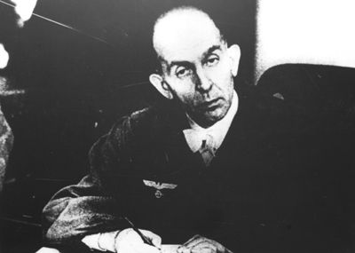
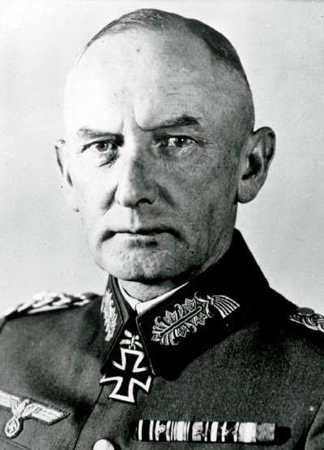

И в виде исторической иллюстрации к неудавшейся попытке военного переворота в Турции. Избранные цитаты из отличной книги Роджера Мэнвелла "Июльский заговор".
Думаю вы без труда увидите целый ряд схожих моментов с тем, что произошло в Турции.
— Господин генерал, — сказал Финк, — в Берлине произошел гестаповский путч. Фюрер мертв. Вицлебеном, Беком и Герделером сформировано временное правительство.
Последовало ледяное молчание. Был слышен только слабый шелест листьев, проникавший сквозь полуоткрытые окна. Финк внимательно наблюдал за генералом, не зная, как тот отреагирует на его доклад. К своему немалому облегчению, он понял, что Блюментрит принял сообщение спокойно.
— Я рад, — в конце концов сказал он, — что к руководству пришли именно эти люди. Они обязательно предпримут шаги к мирному урегулированию. — После длительной паузы он спросил: — Кто сообщил вам эти новости?
Ответ у Финка был готов.
— Военный губернатор, — сказал он.
Больше у Блюментрита вопросов не было, он только попросил дать ему возможность срочно позвонить в штаб в Ла Рош-Гийон, где временно расположился его командир Клюге, теперь официально совмещавший свои обязанности главнокомандующего с обязанностями Роммеля. Он поговорил со Шпейделем, начальником штаба армейской группировки, который еще три дня назад был штабом Роммеля. Шпейдель сообщил, что Клюге выехал на линию фронта и вернется только вечером.
Генерал не знал, насколько свободно можно разговаривать по телефону, он подозревал, что все телефоны прослушивались гестапо.
— В Берлине произошло много нового, — сказал он, подумал и драматическим шепотом добавил только одно слово: — Мертв.
Шпейдель сразу начал задавать вопросы. Блюментрит, не желая больше ничего говорить, согласился приехать в Ла Рош-Гийон и доложить обо всем Клюге лично. После этого, обсудив несколько общих текущих дел, словно ничего судьбоносного не произошло, Финк отбыл обратно в Париж.
Финк рисковал, заявляя, что узнал новости от военного губернатора Парижа. Он ничего не сказал о кодовых словах, сообщенных по телефону членами движения Сопротивления из Германии. Следовало принимать во внимание страх перед телефоном, который неизбежно усилит создавшаяся чрезвычайная ситуация. Не приходилось сомневаться, что люди предпочтут общаться лично и вести разговоры только с глазу на глаз, во всяком случае до тех пор, пока государственный переворот не совершится официально. Финк вернулся в свой кабинет, намереваясь дождаться развития событий. Он был уверен, что Штюльпнагель располагает той же информацией, что и он сам.
А Штюльпнагель был в полном неведении о происходящем и пребывал в нем до времени возвращения Финка в свой кабинет, то есть примерно до четырех тридцати.
Во второй половине дня все действия были временно приостановлены. Телефон — единственное связующее звено между центрами, в которых ждали информации и инструкций, молчал. В Растенбурге всякая связь с внешним миром была прервана. Пока оказывали первую помощь раненым, Гиммлер и его помощники из числа эсэсовских офицеров собирали показания свидетелей. Все указывало на то, что убийца — Штауффенберг. Чудом уцелевший Гитлер собирался встретиться с Муссолини, который так еще и не прибыл. Штауффенберг находился в воздухе. Он летел на выделенном Вагнером «Хейнкеле» в Берлин. Сердцем и мыслями он был вместе со своими товарищами на Бендлерштрассе, которые, как он предполагал, теперь активно действуют. Около трех часов недалеко от «Хейнкеля», уносящего в Берлин человека, которого Гиммлер назвал преступником, пролетел встречным курсом самолет со следователями гестапо на борту. В Берлине Ольбрихт пребывал в крайнем раздражении из-за потери ценного времени. Он не мог привести в действие план «Валькирия», пока не получил информацию из Растенбурга. В Цоссене и Париже заговорщики с нетерпением ждали приказов, а Фромм и Клюге, чья поддержка, хотя бы и молчаливая, была жизненно важной для достижения успеха, все еще ничего не знали о происходящем.
* * *
Фромм слушал сообщение об обстановке на фронтах, когда доложили о приходе Ольбрихта, и прервал докладчика, чтобы узнать, зачем пожаловал начальник общего управления ОКХ. Не теряя времени, Ольбрихт сообщил, что Гитлер убит. Фромм сразу поинтересовался источником информации. Тогда Ольбрихт сослался на звонок Фельгибеля из Растенбурга.
— Я предлагаю в создавшейся ситуации, — сказал Ольбрихт, — отправить всем командирам армии резерва кодовое слово «Валькирия», установленное для непредвиденных обстоятельств внутри страны, и тем самым передать всю исполнительную власть вооруженным силам.
К несчастью, Фромм не был готов принимать участие в решительных действиях такого рода, во всяком случае, до тех пор пока полностью не прояснит для себя ситуацию. Он сказал, что должен лично переговорить с Кейтелем. Ольбрихт, вполне уверенный в себе и желавший во что бы то ни стало перетянуть своего командира на сторону заговорщиков, сам снял трубку телефона на столе Фромма и попросил срочно соединить его с Растенбургом. Проблем со связью не было, и очень скоро к телефону подошел Кейтель.
— Что случилось в ставке? — спросил Фромм. — В Берлине ходят самые ужасные слухи!
— Какие еще слухи! — возмутился Кейтель. — Здесь все нормально.
— Говорят даже, что фюрера убили!
— Ерунда! — объявил Кейтель. — Покушение было, это правда, но, к счастью, неудачное. Фюрер жив, отделался мелкими царапинами. Но где, скажите на милость, сейчас находится ваш начальник штаба граф фон Штауффенберг?
— Он еще не вернулся.
После этого разговора Фромм понял, что никакие действия не нужны. Ольбрихт не знал, что сказать. Он слышал весь разговор, и все, что ему оставалось делать, это вернуться в свой кабинет и все как следует обдумать. Поскольку первые приказы «Валькирии» уже ушли, он оказался в чрезвычайно затруднительном положении.
* * *
Штауффенберг, который больше всего на свете желал немедленно включиться в работу, взбежал по лестнице в кабинет Ольбрихта и доложил обо всем, что видел собственными глазами. Он клялся, что Кейтель лжет. Гитлер не мог уцелеть. Если он и не погиб на месте, то определенно получил тяжелейшие ранения и теперь доживает свои последние минуты. Переворот должен продолжаться.
Штауффенберг сразу начал действовать. Гелльдорфу было сказано прибыть на Бендлерштрассе. Первые приказы «Валькирии» были отправлены командирам подразделений армии резерва в Германии. А что происходит в Париже? Штауффенберг позвонил Хофакеру, рассказал о страшном взрыве и потребовал, чтобы тот приступил к выполнению своей части плана. Он заверил Хофакера, что переворот развивается полным ходом, в данный момент войска занимают правительственные учреждения. Обрадованный и взволнованный Хофакер тут же направился проинформировать своего командира — генерала Штюльпнагеля.
* * *
Первым заговорил Геринг.
— Мой фюрер! — воскликнул он. — Теперь мы знаем, почему наши победоносные армии отступают на востоке. Они преданы своими генералами. Но моя непобедимая дивизия Германа Геринга исправит положение!
— Мой фюрер! — вступил Дённиц. — Мои люди хотят, чтобы вы были уверены: они будут сражаться до победного конца или погибнут. Теперь, когда генералы отброшены в сторону, цитадель Британии падет!
— Мой фюрер! — вмешался Борман. — Это страшное покушение на вашу драгоценную жизнь сплотило нацию воедино. Саботаж генералов или гражданских лиц больше невозможен. Партия знает свои задачи и будет выполнять их с обновленной энергией.
— Мой фюрер! — не остался в стороне Риббентроп. — Теперь, когда с предателями будет покончено, все изменится. Мои дипломаты на Балканах позаботятся, чтобы все преимущества оказались в наших руках.
Эти изъявления преданности привели к взаимным упрекам. Не обращая внимания на присутствие Муссолини, позабыв о предателях, нацистские лидеры бросали друг другу обвинения, одно тяжелее другого. Адмирал Дённиц упрекнул Геринга в неудачах флота. Геринг атаковал Риббентропа, обвиняя последнего в некомпетентности в ведении дипломатической политики. Причем ответы Риббентропа настолько разозлили шефа люфтваффе, что он обозвал имперского дипломата виноторговцем и даже замахнулся на него своим жезлом. Когда детская перепалка достигла высшей точки, а в окна застучали тяжелые капли дождя, Гитлер неожиданно встал со своего места и дал волю своему гневу, нимало не смущаясь присутствием гостей. Могучая волна неистовства фюрера моментально заставила всех присутствующих позабыть о своих мелких дрязгах. Гитлер безумствовал, призывая все мыслимые кары на головы мужчин и женщин, осмелившихся встать на пути выполнения его священной миссии.
— Я уничтожу, — завывал он, — всех преступников, которые осмелились противопоставить себя Провидению и мне. Эти предатели собственного народа заслуживают страшной смерти, и они ее получат. Все участники заговора сполна заплатят за свое предательство, а также их семьи и родственники. Гнездо гадюк, пожелавших воспрепятствовать величию моей Германии, будет уничтожено раз и навсегда.
* * *

Фромм.
В пять часов Ольбрихт пошел к Фромму второй раз. На этот раз его сопровождал Штауффенберг — начальник штаба Фромма. Ольбрихт с ликованием сообщил командующему армией резерва, который еще не знал, что уже таковым не является, что Штауффенберг был личным свидетелем взрыва и совершенно точно знал, что Гитлер мертв.
— Это невозможно, — сказал Фромм. — Кейтель сказал, что в ставке все в порядке.
— Фельдмаршал Кейтель, как обычно, лжет, — невозмутимо сообщил Штауффенберг. — Я сам видел, как Гитлера вынесли мертвым.
— Поэтому, учитывая сложившуюся ситуацию, мы передали командирам подразделений кодовый сигнал, предусмотренный на случай внутренних беспорядков, — добавил Ольбрихт.
Услышав это, Фромм вскочил, стукнул кулаком по столу и заорал:
— Это самоуправство! Вы нарушаете субординацию! И кто это «мы»? Кто конкретно отдал приказ?
— Мой начальник штаба полковник Мерц фон Квирнгейм.
— Немедленно пришлите его сюда!
Прибывший Квирнгейм не отрицал, что передал кодовые слова, и Фромм поместил его под арест. Этого Штауффенберг уже не мог вынести. Он решил, что единственный способ повлиять на Фромма — это сказать ему правду. И он решительно поднялся со своего места.
— Генерал Фромм, — заявил он, — я лично привел в действие бомбу во время совещания в ставке Гитлера. Взрыв был такой силы, как будто в помещение попал стопятидесятимиллиметровый снаряд. Никто из находившихся в комнате не мог уцелеть.
Фромм обернулся к Штауффенбергу и проговорил:
— Граф, покушение сорвалось. Вы должны немедленно застрелиться.
— Я не собираюсь делать ничего подобного, — ответствовал Штауффенберг.
— Генерал Фромм, — вмешался Ольбрихт, — надо действовать. Если мы не нанесем удар сейчас, наша страна будет уничтожена навеки.
Фромм внимательно посмотрел на говорившего:
— Ольбрихт, значит ли это, что вы тоже участвуете в перевороте?
— Да, господин генерал, но я не вхожу в ту группу, которая возьмет на себя управление Германией.
— Тогда я официально объявляю, что с этого момента вы трое находитесь под арестом.
— Вы не можете арестовать нас! — воскликнул Ольбрихт. — Очевидно, вы так и не поняли, что происходит и кто находится у власти. Это мы можем вас арестовать.
Окончательно рассвирепев, Фромм выскочил из– за стола и бросился на Ольбрихта с кулаками. Присутствовавшие при этом Клейст и Хефтен синхронно выхватили револьверы и одновременно приставили их к толстому животу Фромма. Тот отступил.
— У вас есть пять минут, чтобы принять решение, — изрек Ольбрихт, и Фромм уступил. Он сник и без возражений под конвоем проследовал в комнату своего адъютанта, где телефонные линии были перерезаны.
* * *
Гепнер, удалившийся в туалет Ольбрихта, чтобы переодеться в военную форму, вышел оттуда полноправным преемником Фромма.. Со свойственной ему пунктуальностью он дождался приезда из Цоссена Вицлебена, чтобы это назначение было закреплено в письменной форме и подписано теневым верховным военным командующим. Однако его первой заботой стало состояние Фромма. От призрака весьма авторитетного командующего не так легко было избавиться. Гепнер сразу направился наверх в помещение, где содержали генерала, предложил ему помощь, извинился за неудобства, которые ему приходится переносить, и заверил, что никто не причинит ему вреда. Он объяснил Фромму, что происходит, и перечислил людей, которые руководят событиями, включая себя.
Эта старомодная куртуазность чрезвычайной ситуации оказалась гибельной. Войска, поддерживающие переворот, едва успели начать движение. На Бендлерштрассе находилась лишь дежурная охрана, никем не усиленная. Когда же Бек, как глава государства, спросил у Ольбрихта, на какую защиту они могут рассчитывать в такой деликатный момент, ответ его полностью обескуражил.
— Кому подчиняются охранники? — поинтересовался Бек в присутствии Гизевиуса. — Что они будут делать, если появится гестапо? Станут ли они вас защищать?
Ольбрихт, с головой погрузившийся в решение текущих вопросов, ответил, что, по его мнению, должны, но точно он не знает. Этот ответ весьма обеспокоил Бека. Его тревога усилилась еще более, когда Вицлебен — теневой командующий объединенными силами, несмотря на вызов, не появился на Бендлерштрассе. Гепнер, побеседовавший с Фроммом, доложил, что бывший командующий армией резерва хочет уйти домой и готов дать слово чести, что не будет предпринимать никаких действий против заговорщиков. Бек был готов его отпустить. Но Гизевиус заявил, что ему не нравится такая мягкость к врагам, отказавшимся присоединиться к перевороту. Его надо не отпускать домой, а расстрелять. Да и что значит слово чести? Он напомнил Штауффенбергу, что тот в свое время тоже давал Фромму слово чести не причинять вред Гитлеру. Штауффенберг пришел в ярость, но тут вмешался Бек и приказал, чтобы Фромм оставался там, где он находится.
* * *

Штауфенберг с женой.
Появившийся Штауффенберг сказал Гизевиусу, что он должен был задержать Пифредера и его людей: они пытались допросить его о событиях в Растенбурге.
Гизевиус пришел в ужас.
— Почему вы сразу же не застрелили этого убийцу? — вскричал он.
— Всему свое время, — ответствовал Штауффенберг.
— Но, Штауффенберг, этот человек не может оставаться здесь и наблюдать за всем происходящим. А если он сбежит?
Гизевиус видел, что Штауффенберг забеспокоился, и потребовал, чтобы полковник больше не ждал прибытия солдат в город, а сформировал отряд офицеров из числа находящихся на Бендлерштрассе офицеров, чтобы убить Геббельса и шефа гестапо Мюллера. Штауффенберг согласился с тем, что эту идею стоит рассмотреть, хотя его планы переворота были связаны с немедленным входом в Берлин войск для занятия правительственных учреждений и гестапо.
* * *
Неуверенность и неопределенность действий чувствовалась во всем рейхе. Аресты, предусмотренные приказами, были проведены в Мюнхене и частично в Вене. Но в большинстве случаев армейские командиры, независимо от того, что они обещали по телефону Штауффенбергу или Беку, вовсе не стремились обострять отношения с войсками СС и местными нацистскими гаулейтерами. Приказы Вицлебена подоспели примерно в то же время, что и объявление по радио о неудаче покушения. Поэтому, какими бы ни были взаимоотношения между армией и местными партийными чиновниками, последовал период затишья. В Гамбурге, где гаулейтер Карл Кауфман и командир армейского подразделения были близкими друзьями, они весь вечер просидели вместе и шутили на тему, кто кого должен арестовать — поступающие друг за другом приказы были слишком противоречивыми.
* * *
Затем Бек перешел к делу.
— Клюге, вы должны немедленно и совершенно открыто перейти на нашу сторону.
Но пока Бек говорил, в кабинет Клюге вошел его адъютант и положил на стол запись радиосообщения, переданного в шесть сорок пять. Клюге пробежал глазами текст, задержавшись на фразе «Фюрер серьезно не пострадал, получив лишь легкие ожоги и царапины. Он немедленно возобновил работу и…»
Не упоминая о том, что он видел текст радиосообщения, Клюге перебил Бека.
— Какова реальная ситуация в ставке фюрера? — настойчиво проговорил он.
И снова честность Бека не позволила ему солгать. Он признал, что существуют некоторые сомнения относительно происшедшего в Растенбурге.
— Да какая разница, — в конце концов возмутился он, — если мы уже начали действовать?
— Да, но…
— Клюге, я спрашиваю у вас лишь то, что действительно имеет значение. Одобряете ли вы то, что мы здесь начали, и готовы ли вы подчиняться моим приказам?
Клюге колебался. Текст переданного по радио сообщения лежал перед его глазами.
А Бек продолжал настаивать:
— Клюге, вы не должны сомневаться. Вспомните, о чем мы не так давно говорили и к каким решениям пришли. Я спрашиваю вас еще раз, будете ли вы подчиняться моим приказам?
Но Клюге одолевали дурные предчувствия. Поразмыслив, он ответил:
— Я должен посоветоваться со своими офицерами. Перезвоню через полчаса.
* * *
Вицлебен прибыл около семи тридцати. Его физиономия была красной от ярости. В руке он держал маршальский жезл. Все присутствующие встали и щелкнули каблуками. Даже Штауффенберг отдал честь вошедшему.
— Что здесь творится? — заорал Вицлебен, но тут заметил Бека. К чести теневого главнокомандующего объединенными силами, он все же выказал некоторое уважение к генералу — теневому регенту Германии. — Разрешите доложить о прибытии, господин генерал, — сказал он и сразу отвел Бека и Штауффенберга в сторону для беседы, которая очень быстро переросла во взаимный обмен упреками. В соседней комнате переругивались Ольбрихт и Гепнер.
— В любом перевороте не обойтись без риска.
— Начинать путч стоит, только если существует по крайней мере девяностопроцентная вероятность удачного исхода.
— Ерунда! Пятидесяти одного процента вполне достаточно…
* * *
Ему удалось связаться со Штиффом довольно легко, при этом он даже не подозревал, насколько оказался близок к сердцу заговора. Но после того, как бомба не выполнила свою работу и фюрер остался жив, Штифф отмежевался от заговора. Он всячески старался обезопасить себя, утверждая, что Гитлер, безусловно, жив, а сообщение по радио — чистая правда.
— Откуда вы взяли эту ерунду о смерти фюрера? — поинтересовался он.
— Получили сообщение по телетайпу, — ответил, взяв трубку, Клюге.
— Нет, нет, — убежденно заверил Штифф. — Гитлер жив и здоров.
Клюге больше не сомневался. Все было кончено.
— Чертова игрушка сработала вхолостую, — сказал он и пожал плечами.
* * *

Рано утром атмосфера оставалась чрезвычайно напряженной. Ни Геббельс, ни Гиммлер не испытывали уверенности в том, что владеют ситуацией. Они только знали, что покушение на жизнь фюрера являлось частью заговора, корни которого пока еще не были обнаружены. Никто точно не знал, какие силы стоят за взрывом в Растенбурге, и приходилось постоянно опасаться, что в ближайшие часы может последовать еще одно покушение. Генералы, командовавшие армиями на Восточном и Западном фронтах, являлись еще одним неопределенным фактором. Геббельс мог только предполагать, насколько серьезно они замешаны в заговоре. Но время шло, и вместе с этим росло его убеждение, что ответственные за неудачный заговор не могут тягаться с ним — быстрым, умным, беспощадным.
— Это была телефонная революция, — сказал он своим помощникам, — которую мы подавили несколькими винтовочными выстрелами. Но если бы у наших противников было чуть больше опыта, энергии и решительности, винтовки были бы уже бесполезны.
Ровно в четыре часа утра допросы завершились.
— Господа, — объявил Геббельс, — путч окончен. — Он проводил Гиммлера к машине и крепко пожал ему руку.
Обратно в дом он вернулся очень довольный. В сопровождении своей правой руки — Наумана и фон Овена — он медленно поднимался по лестнице и помпезно вещал, часто делая паузы, чтобы подчеркнуть сказанное. У дверей своих личных апартаментов он ненадолго присел на низкий столик и покачал в воздухе ногой.
— Это было как гроза, после которой воздух стал чище, — сказал он и оперся локтем на бронзовый бюст Гитлера. — Когда после полудня начали поступать ужасные новости, кто мог надеяться, что все окончится так быстро и так благополучно? Ведь были моменты, когда ситуация казалась угрожающей. За то время, что я рядом с фюрером, это уже шестое покушение на его жизнь. Но ни одно из предыдущих не было таким опасным. Если бы заговорщики добились успеха, мы бы с вами сейчас здесь не сидели, в этом у меня нет ни малейших сомнений.
Геббельс зло высмеял всех заговорщиков, кроме Штауффенберга.
— Что за человек! — восхищенно воскликнул он. — Мне его почти жаль. Какое потрясающее хладнокровие! Какой ум! Какая железная воля! Несправедливо, что столь выдающийся человек оказался в окружении такого количества идиотов.
* * *
В штабах различных военных подразделений, расположенных в Париже и его окрестностях, заступившие на ночное дежурство офицеры присматривались к непонятной ситуации с кошачьей осторожностью. Когда дежурный из штаба командования военно-воздушных сил позвонил дежурному в штабе генерала Оберга, командиру частей СС, он с немалым удивлением услышал ответ: «Сегодня связи нет». После этих коротких слов линия разъединилась. Служебные телефоны беспрестанно трезвонили, накрывая Париж невидимой сетью, сотканной из вопросов, на которые не было ответов, и ситуация не прояснялась. Увертки, уклончивость и недоговоренность в ту ночь стали нормой. Так продолжалось до тех пор, пока около часа ночи адмирал Кранке, самый решительный нацист из всех парижских командиров, решил, что Клюге больше нельзя доверять. Ведь тот являлся частью проклятой армии и определенно избегал всяческих контактов с ним. Терпение адмирала истощилось, и он поднял по тревоге военно-морские силы, находившиеся под его командованием. Эти люди, сказал он Юнгеру, очень скоро освободят Оберга, если этого не сделает сам Штюльпнагель.
Находившийся в отеле «Рафаэль» Штюльпнагель понимал, что его конец близок. Позвонил Юнгер и сообщил об угрозах Кранке, а стоящий рядом Бойнебург требовал какого-нибудь решения. Следует освободить Оберга или нет? Кранке, ярость которого требовала выхода, теперь обрушился на Линстова по телефону «Рафаэля». Это скандал! Немцы идут на немцев на улицах Парижа! В конце концов Штюльпнагеь сдался и приказал освободить пленных. При этом он добавил, чтобы Оберга привезли в «Рафаэль» для беседы. Линстов быстро свернул свой разговор с адмиралом, сказав, что в морских пехотинцах нет необходимости и что освободить арестованных распорядился лично Штюльпнагель.
На долю Бойнебурга выпала весьма опасная дипломатическая миссия восстановить власть СС в Париже. Он вошел в номер отеля «Континенталь», где содержались Оберг и его люди. С моноклем в глазу и улыбкой на физиономии он подошел к Обергу и отдал ему честь гитлеровским приветствием.
— Господа, — сказал он, — у меня для вас хорошие новости. Вы свободны. — И пока преимущество было еще на его стороне, он передал негодующему Обергу приглашение Штюльпнагеля встретиться с ним в отеле «Рафаэль».
Было два часа ночи. Оберг, вознамерившийся во что бы то ни стало получить объяснения, засунул возвращенный ему пистолет в кобуру и зашагал рядом с Бойнебургом к отелю «Рафаэль», а его офицеры поспешили снова водвориться в своих владениях. По правде говоря, Оберг не был тяжелым человеком, и с ним вполне можно было договориться. Он даже обменялся рукопожатием со Штюльпнагелем, когда тот объяснил ему, что задержание было ошибочным, хотя и имело благую цель — защитить его от враждебных действий. Поверил в это Оберг или нет, остается неизвестным, но, во всяком случае, он не отказался смыть все недоразумения предложенным ему шампанским. Конечно, немцы не должны драться с немцами на чужой земле. В переполненной комнате снова зазвучали громкие голоса и смех, и, когда в три часа в Париж прибыл Блюментрит, чтобы по приказу Клюге принять дела у Штюльпнагеля, освобожденного от своей должности, он с изумлением увидел, что Оберг, Штюльпнагель и Бойнебург пьют шампанское, словно старые друзья. Блюментриту тоже налили. Только Хофакер исчез. Он больше не мог вынести напускную веселость, за которой маячил лик смерти. Он потихоньку ускользнул, переговорил со своим другом Фалькенхаузеном и поспешил упаковать немногочисленные пожитки, лихорадочно обдумывая план спасения. Блюментрит, человек по натуре добродушный, очень обрадовался, что дело разрешилось миром. Он вполне мог бы сгладить острые углы и постараться, чтобы происшедшее обошлось без последствий. Но Клюге, как и Фромм в Берлине, уже принял меры самозащиты, которые, по его мнению, должны были ликвидировать неопределенность его положения. Он отправил подробный отчет о деятельности Штюльпнагеля Гитлеру. Но фельдмаршалу, как и Фромму, не повезло: благодаря собственной моральной трусости он оказался скомпрометированным и в глазах нацистов, и в глазах заговорщиков.
* * *
После неудачной речи Гитлера рано утром в пятницу Геббельсу и Гиммлеру было предоставлено решить, что именно нацисты пожелают довести до сведения внешнего мира о событиях 20 июля. После визита в Растенбург Геббельс 26 июля произнес по радио весьма искусную речь, в которой максимально использовал новые полномочия, данные ему накануне фюрером, назначившим его ответственным за ведение тотальной войны. Министр пропаганды получил приказ поставить под ружье новую армию численностью миллион человек. Он говорил о «жестоком ударе исподтишка», нанесенном фюреру Штауффенбергом, которого назвал «злобным и порочным человеческим существом», собравшим вокруг себя «ничтожную кучку предателей». Позор, павший из-за этого на весь народ, необходимо смыть подъемом активности на фронтах войны. Это был заговор, заявил он, «подготовленный в стане врага», хотя для закладки бомбы британского производства рядом со священной особой Гитлера были использованы «презренные ублюдки, носившие немецкие имена». «После всего этого, — вдохновенно вещал Геббельс, — я могу сказать только одно: если избавление фюрера от страшной опасности не является чудом, тогда на свете больше нет чудес. <…> Мы можем быть уверены, что Всевышний не мог проявить нам свою волю яснее, чем посредством чудесного спасения фюрера». В узком кругу он говорил: «Понадобилась бомба под задницей, чтобы фюрер стал видеть очевидное».
* * *

Фрейслер
«Фрейслер. Правда ли, что, когда мы в октябре 1943 года отступали от Днепра, подлый душегуб (Mordbude) граф фон Штауффенберг потребовал, чтобы вы присоединились к нему, и вы не отказались?
Штифф. Он приходил поговорить со мной, и я не отказался.
Фрейслер. Правда ли, что вы не отказались, потому что захотели урвать свой кусок пирога?
Штифф. Да.
Фрейслер. Именно так вы сказали полиции. И вы урвали свой кусок пирога, вот только подавились им. И при этом навеки запятнали свое честное имя. Это, надеюсь, вы понимаете?
Штифф. Я могу только сослаться на заявление, в котором указал свои мотивы.
Фрейслер. Вы поняли, что я сказал?
Штифф. Да, и все же хотел бы сослаться на упомянутое заявление.
Фрейслер. Вы можете ссылаться на него до посинения. Сейчас имеет значение лишь то, что вы нарушили клятву, изменили присяге верности национал-социализму…
Штифф (перебивает). Я присягал на верность немецкому народу».
Фрейслер не мог снести того, что его нагло перебили. Возвысив голос, он громогласно объявил, что немецкий народ и фюрер едины в глазах всех, за исключением разве что таких ублюдков, как Штифф. Затем Фрейслер красочно расписал, как заговор со временем рос и ширился и как Штифф оказался неразрывно связанным с гнусным убийцей Штауффенбергом.
«Фрейслер. Знали вы или нет до 20 июля, что Штауффенберг назначил покушение именно на этот день?
Штифф. Мне сказал об этом генерал Вагнер накануне — вечером 19-го.
Фрейслер. Значит, тем вечером вы были осведомлены о том, что на следующий день свершится ужасное преступление, страшнее которого еще не знала история Германии. Завтра, пока мы все с оружием в руках будем бороться за жизнь и свободу нации, наш великий лидер будет убит. Вы знали даже больше. Вы знали, что завтра ваш соучастник граф Штауффенберг убьет фюрера, подло воспользовавшись его доверием. Вы знали это! Но доложили ли вы об этом?
Штифф. Нет.
* * *

Вицлебен.
«Фрейслер. Итак, когда вы и Бек начали волноваться относительно того, что вы сочли ошибками военного руководства, вы начали думать, как исправить положение?
Вицлебен. Да.
Фрейслер. А также кто мог сделать это лучше?
Вицлебен. Мы оба.
Фрейслер. Вы оба? Вы действительно считали, что могли бы справиться лучше? Я не ослышался? Повторите еще раз, чтоб вас могли услышать все!
Вицлебен (громко). Да!
Фрейслер. Должен заметить, это просто-таки неслыханная самонадеянность. Фельдмаршал и генерал-полковник заявляют, что могли бы справиться лучше, чем наш общий лидер, человек, который раздвинул границы рейха на всю Европу, человек, который обеспечил авторитет нашей стране на всем континенте. И вы продолжаете утверждать, что таково было ваше мнение?
Вицлебен. Да.
Фрейслер. Надеюсь, вы извините, если я употреблю такой термин, как мегаломания? Ах, вы пожимаете плечами. Что ж, возможно, этот жест и является лучшим ответом».
Фрейслер обратил себе на пользу признание Вицлебена о трудностях, с которыми заговорщики столкнулись при формировании оперативной группы, которой предстояло взять в плен Гитлера.
«Фрейслер. Итак, Вицлебен, кто должен был возглавить оперативную группу?
Вицлебен. Их еще следовало найти.
Фрейслер. «Их еще следовало найти»! Не могу поверить, что вы это сказали! «Их еще следовало найти»! Среди немецкого народа вы не можете найти таких людей! Вы превзошли даже Бадоглио! Можете зарегистрировать свой патент в аду! Неужели вы действительно верили, что фюрер подобен вам? Неужели вы считали, что с ним можно просто так справиться, без борьбы? Вы и в самом деле так думали?
Вицлебен. Да, я так думал.
Фрейслер. Вы так думали! Подумать только, какая удивительная смесь преступления и глупости! Значит, вы планировали так: лишь только фюрер окажется в ваших руках, он будет делать то, что вы ему скажете!
Вицлебен. Да, это так.
Фрейслер. Это так? Что за дьявольское преступление! Какое злодейское предательство вассалами своего господина, солдатами своего командира, немцами их фюрера!»
* * *

Гепнер
Вицлебену было разрешено вернуться на место, и на допрос был вызван Гепнер — легкая добыча, по мнению Фрейслера. Чего стоила одна только история о военной форме, уложенной в чемоданчик и тайком пронесенной на Бендлерштрассе 20 июля? Хорошо еще, заметил Фрейслер, что он забыл упаковать свой Рыцарский крест, ведь все равно дело кончилось увольнением за трусость. Гепнеру не дали возможности опровергнуть это голословное заявление. Фрейслер вовсю потешился над эвфемистической ссылкой Гепнера на «перемену», которую он хотел видеть в ставке фюрера.
«Фрейслер. Перемена в ставке фюрера? Ну, почему же вы такой трус! Почему вы не говорите прямо, что вы имеете в виду?
Гепнер. Хорошо. Мы надеялись, что ряд генералов смогут повлиять на фюрера, заставить его отказаться от лидерства.
Фрейслер. Повлиять на фюрера? Это уж слишком!»
* * *
Фрейслер объявил перерыв до следующего дня, когда должен был состояться допрос последнего обвиняемого — фон Хазе, и вызвал для повторного допроса Вицлебена. Он спросил, почему Вицлебен был уверен в успехе заговора.
«Вицлебен. Я думал, что мы можем рассчитывать на поддержку надежных подразделений.
Фрейслер. Вы имеете в виду «надежных» в вашем смысле?
Вицлебен. Да.
Фрейслер. И это было, как вы сказали, вашей основной ошибкой?
Вицлебен. Да.
Фрейслер. Вы и сейчас так считаете?
Вицлебен. Да.
Фрейслер. Имеется в виду, используя ваши собственные слова, сказанные на допросе в полиции, что «вы ошиблись в главном, неправильно оценив национал-социалистический настрой офицеров»?
Вицлебен. Да».
Таким образом, Вицлебен сыграл на руку Фрейслеру и добавил авторитетности утверждению нацистов о том, что заговор был работой небольшой группы офицеров, у которой не было поддержки в армии в целом. Однако причина неудачи переворота, и сейчас мы это понимаем, заключалась не в поддержке армией национал-социализма, а в недостатке координации и недостаточном понимании необходимых составляющих успешного заговора среди самих заговорщиков. К тому же они не допускали варианта того, что Гитлер после покушения останется в живых.
http://militera.lib.ru/research/manvell_fraenkel01/text.html#t15 - Читать книгу "Июльский заговор"